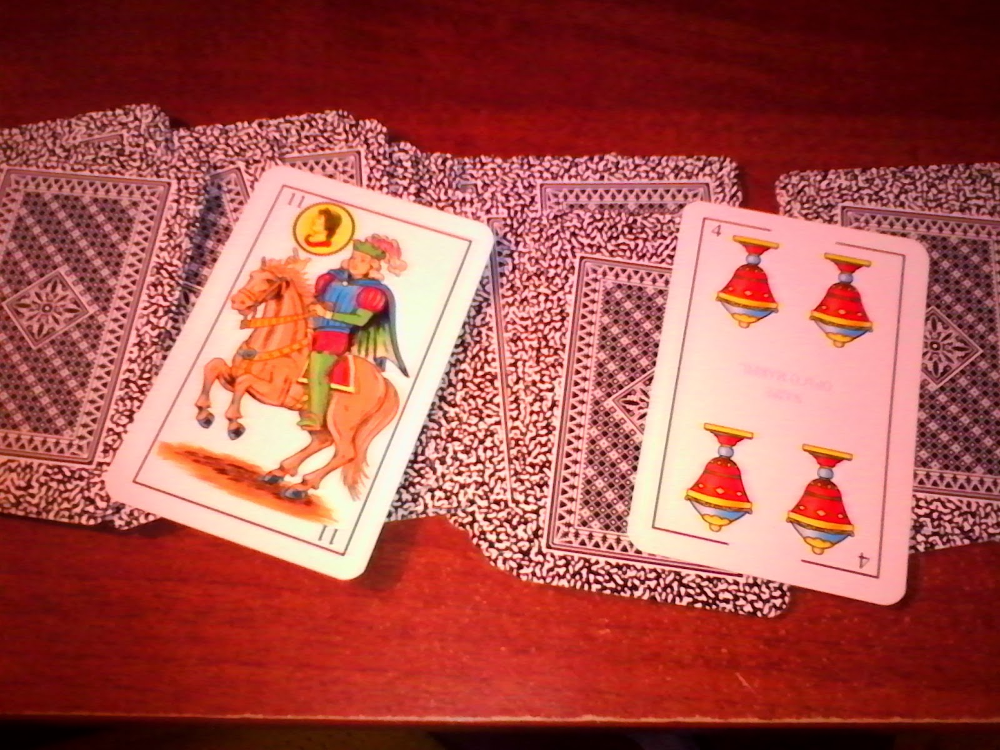
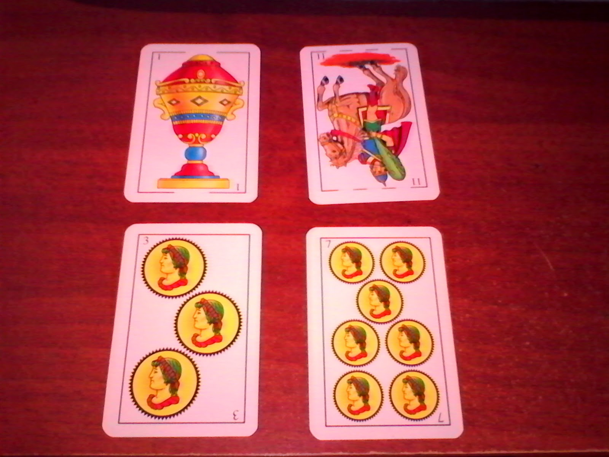
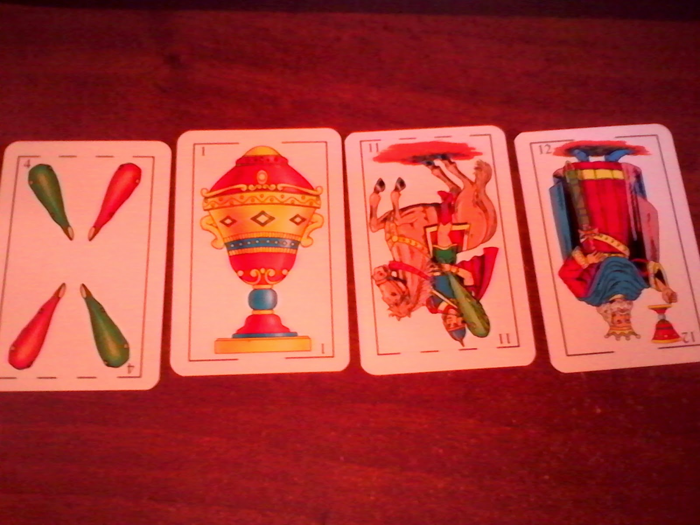
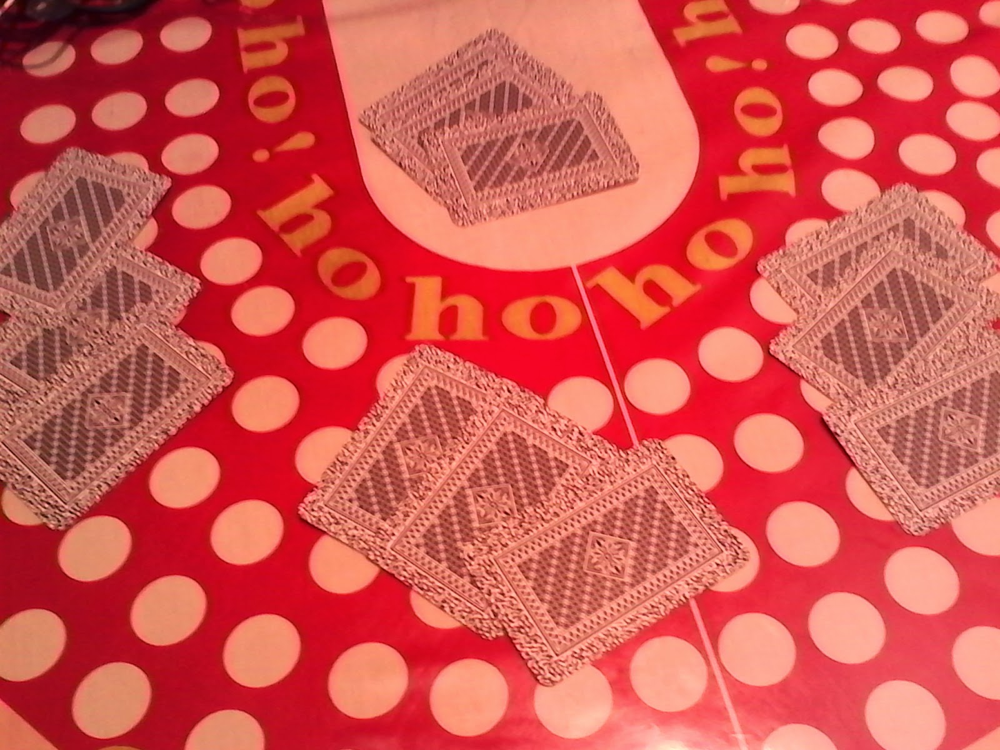
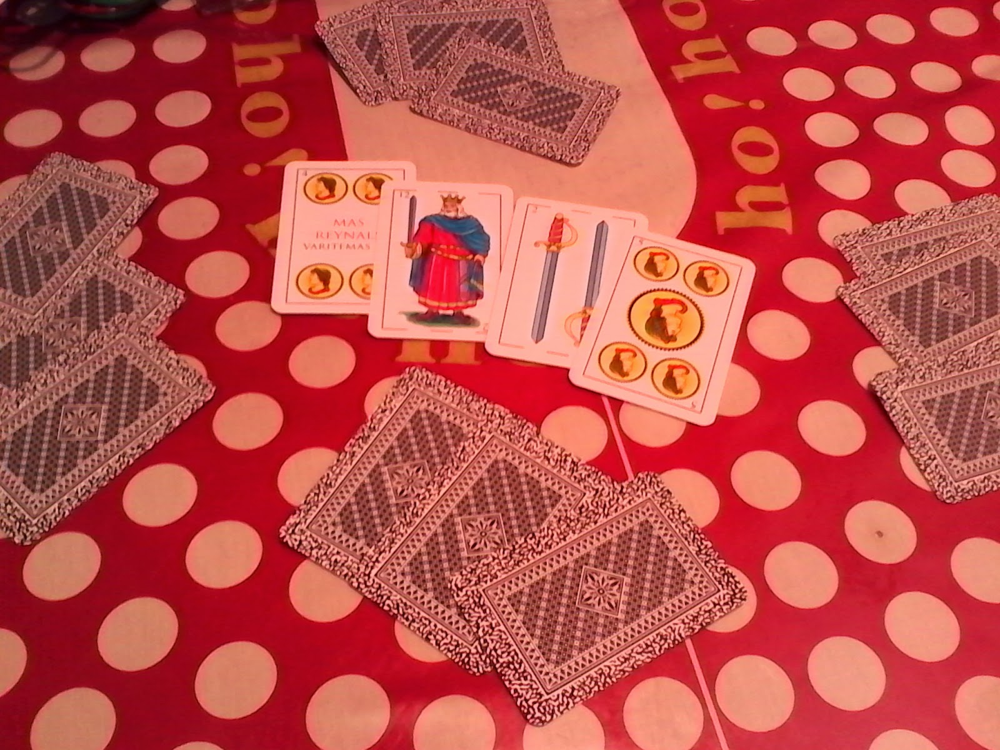

Cómo se juega
La caída se puede jugar de forma individual o en parejas, con la baraja española de 40 cartas.
- Antes de comenzar el juego, se desplazan todas las cartas sobre la mesa y los jugadores sacan una carta al azar, la carta mayor indicara quien barajea y reparte primero. Importante este juego sólo es para un maximo de cuatro jugadores.
- Una vez decidido el jugador que reparte, este comienza bien sea entregando la mesa o reapartiendo a los demás jugadores. ¿Cómo?, de la siguiente manera:
- Una vez repartidas las cartas, el jugador a mano derecho del repartidor
- Tras haber repartido, el jugador a mano derecho del repartidor comienza el juego lanzando una carta a la mesa o si tiene una carta del mismo valor que en la mesa, procede a recogerla junto con las cartas que le siguen a la misma. Así sucesivamente cada jugador va lanzando o recogiendo cartas, además de declarar jugadas que salgan en su mano por suerte.
- Una vez agotadas cada una de las cartas del mazo termina la partida, si la partida es individual o en grupo se realiza un conteo por cada jugador de la siguiente manera:
-
a) Teniendo 4 jugadores en el juego, tras haber terminado la partida cuentan hasta 10 cartas, si le sobran más cartas, son puntos acumulados a la cuenta del jugador.
b) Teniendo 3 jugadores en el juego, quien reparte cuenta hasta 14 cartas y los otros 2 jugadores hasta 13 cartas, si le sobran más cartas, son puntos acumulados a la cuenta del jugador.
c) Teniendo 2 jugadores en el juego, ambos cuentan hasta 20 cartas, si le sobran más cartas, son puntos acumulados a la cuenta del jugador.Cosas que se pactan antes de jugar

La caída tiene variantes según con quién se juegue, así que conviene ponerse de acuerdo antes de empezar.
- Si se puede “matar el canto” al tribilín o no. De eso depende que el tribilín gane la partida de golpe.



b) Si el jugador decide repartir las cartas a los demas jugadores primero, lo hace entregando carta por carta empezando por el jugador ubicado a su derecha, y reparte a cada jugador hasta que cada uno tenga 3 cartas en su mano incluyendo al repartidor. Y luego entrega la mesa de la forma explicada con anterioridad.
